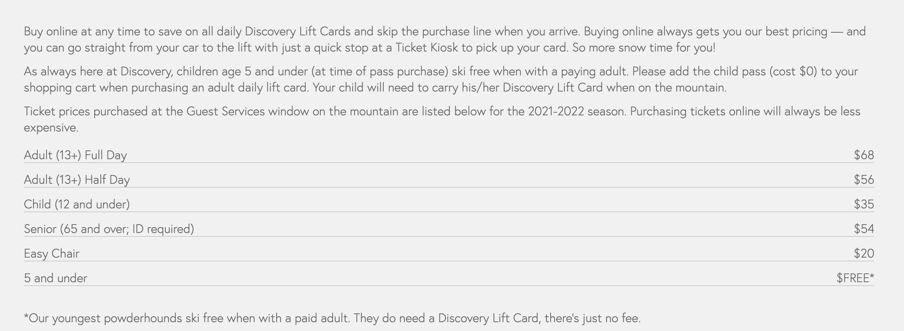

Discovery is definitely the mountain on the list that flys the lowest under the radar. It definitely does not get the media attention that all the rest do while still having a lot to offer. For the most expert thrill seeking skiers, the backside offers a lot with 3 lifts that are almost all black diamonds. The other four chairs are significantly better for beginners with pretty much all of those runs being green circles and blue squares. It has the best terrain diversity of all but definitely offers the least amount of runs.
Discovery is located almost directly in the center of Helena, Missoula, and Butte which makes it very convenient for people from those areas or visiting those areas to adventure to other mountains or new towns with easy access from highways coming from all directions. Philipsburg is the real small town vibe with not many people living there at all for people who are really trying to get out and see the outdoors. From the top of the mountain, you can easily spot Georgetown Lake that is always beautifully frozen over. There is lots to do outside of skiing in the town such as Philipsburg Brewing Company that has grown really popular and sells beer all across Montana. Lastly, there is a great hotsprings known as Fairmont where the whole family can get a good soak. Philipsburg is really more than meets the eye.
Discovery is the cheapest on this list because it has the least to offer and the fewest skiers in general. The infrastructure here is not set to hold too many people, so there definitely are lines at the ticket booth. On the other hand, that goes to show that this mountain is definitely prepared to keep low prices and better customer service with more time and less customers to go around.
